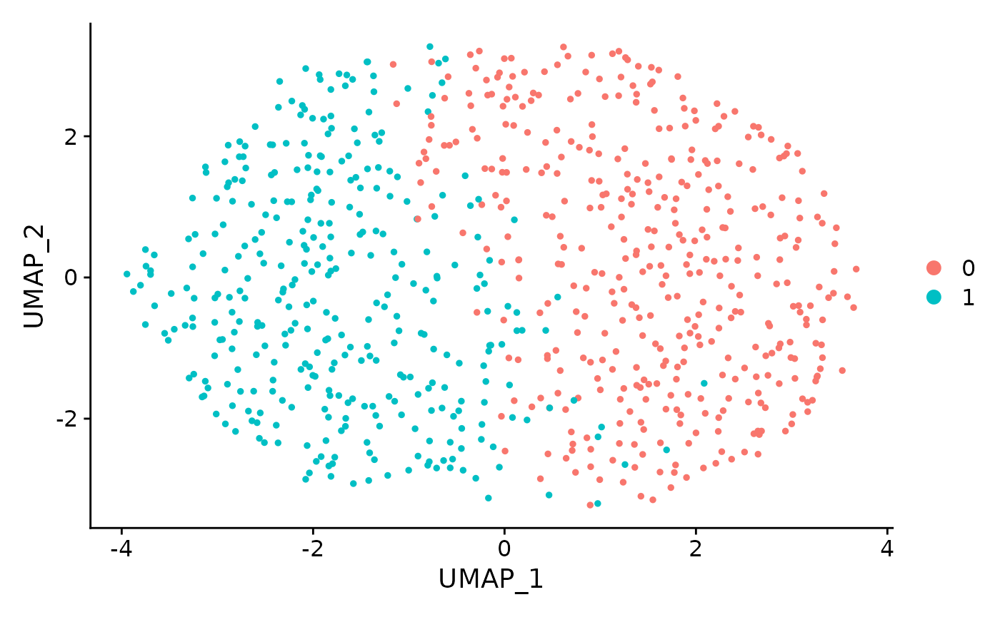

Perform ClusterDE on a cell line dataset
Dongyuan Song
Bioinformatics IDP, University of California, Los Angelesdongyuansong@ucla.edu
6 July 2023
Source:vignettes/ClusterDE-cellline.Rmd
ClusterDE-cellline.Rmd
tools::R_user_dir("ClusterDE", which="cache")
library(ClusterDE)
library(Seurat)
library(SingleCellExperiment)
library(ggplot2)Download data
We download the a cell line data set H2228. The original data is from Tian et al., Nature Methods 2019. Since the data is from the pure cell line, it should not have cell types, and, of course, between cell type DE genes.
sce <- readRDS(url("https://figshare.com/ndownloader/files/41395260"))
cellline <- Seurat::as.Seurat(sce)
#> Warning: Keys should be one or more alphanumeric characters followed by an
#> underscore, setting key from PC to PC_
#> Warning: All keys should be one or more alphanumeric characters followed by an
#> underscore '_', setting key to PC_Run the regular Seurat pipeline
We perform the default Seurat clustering. Please note that ClusterDE is designed for 1 vs 1 comparison; therefore, we set the resolution as 0.2 here to obtain two clusters for illustration purpose.
RNGkind("L'Ecuyer-CMRG")
set.seed(123)
cellline <- NormalizeData(object = cellline)
cellline <- FindVariableFeatures(object = cellline)
cellline <- ScaleData(object = cellline)
#> Centering and scaling data matrix
cellline <- RunPCA(object = cellline)
#> PC_ 1
#> Positive: RPS14, RPL18AP3, RPL36, RPS23, RPL28, LRRC75A-AS1, AC079250.1, FTH1, ZFAS1, EEF2
#> RPL7P9, RPL13A, RPS3AP26, EEF1A1P13, RPS16, RPS23P8, RPL13AP5, RPL29, FTH1P10, RPL13AP25
#> SNHG5, FTH1P8, RPL4, RPS3AP6, AC064799.1, C6orf48, FTH1P7, C1orf56, RPL7AP6, TMSB4X
#> Negative: PSMB2, PSMA7, U2AF1, NUDC, RBM8A, CALM1, BUB3, CLIC1, U2AF1L5, XRCC5
#> VPS29, RBM8B, CACYBP, RPA3, SSBP1, PSMC5, MRPL47, PSMD8, BRIX1, CNIH4
#> PCMT1, PSMD13, CYC1, PRDX2, SEPT7, S100A11, VDAC3, PSME2P2, ZWINT, HMGB1
#> PC_ 2
#> Positive: NACA, RPL7AP6, SKP1, UBA52, BTF3, SSR2, RPL7A, ARPC3, RPL9P9, PPIA
#> PSMD4, EIF1, RPL10, LGALS3BP, RPL10P16, SNRPB2, RPL10P9, S100A11, PPIB, ANXA5
#> EEF2, PSME1, SSBP1, SSR4, RPL7P9, COPE, BSG, MGST1, VPS28, COPS6
#> Negative: SIVA1, HNRNPAB, RPL39L, DEK, CDCA5, TMPO, FAM111A, ASF1B, CENPK, ESCO2
#> BRCA1, H2AFV, RAD51AP1, MT-RNR2, ORC6, CENPX, SNRNP25, FBXO5, RRM1, DIAPH3
#> USP1, CDCA4, TMEM106C, PGP, LSM4, C21orf58, CENPN, BRI3BP, SGO1, CHAF1A
#> PC_ 3
#> Positive: RPL13AP5, RPL13AP25, AC024293.1, RPL29, RPSAP19, RPS5, RPL18, RPS3AP26, RPS3AP6, RPL15
#> RPL28, DRAP1, RPS11, RPL9P9, RPL13AP7, RPS19, DCBLD2, FXYD5, FEN1, SLBP
#> RPS15, COTL1, RPSA, FLNA, RPL7AP6, RPL36, C1orf21, CPA4, ORC6, RPS16
#> Negative: SMIM22, TSPAN13, ST14, PERP, CRB3, MT-CO1, SERINC2, ATP1B1, CDH1, F11R
#> B2M, MT-RNR2, SPINT1, NMB, PLA2G16, SPDEF, CD55, ADGRF1, TSPAN1, LIMA1
#> ERBB3, ERO1A, ASS1, CDA, ALCAM, SYNGR2, MT-CO2, CDH3, C3, LSR
#> PC_ 4
#> Positive: IFNGR1, NAMPT, NAP1L1, CPD, LMAN1, CALR, ITGA2, NAMPTP1, ITM2B, RRM1
#> C3, RHOBTB3, CTHRC1, EEF2, HSD17B11, C1S, IFI16, SMC2, CPE, EPHX1
#> DST, HLA-DMB, NUCB2, MT-ND6, TMEM45A, BRCA1, CDK5RAP2, HINT1, C1R, FAM111A
#> Negative: S100A16, TMA7, TIMM8B, PFN1, SLIRP, GPX1, LAMC2, POLR2L, MRPL52, RPS19
#> CDH1, TOMM40, ATP5MD, HSPE1, NAA10, GPX1P1, RPS16, MRPL12, MCRIP2, PDCD5
#> RPL18, PLEC, S100A13, RPL36AL, LAD1, MGLL, BOLA2B, MISP, MRPL36, SEC61G
#> PC_ 5
#> Positive: BTG1, PPP1R15A, EIF1, JUN, CEBPG, H3F3B, TMEM132A, C6orf48, HIST2H4B, SGK1
#> KPNA4, PMEPA1, KLF6, CDKN1A, WARS, PEA15, GARS, MAP1LC3B, SNHG12, SERTAD1
#> LAMC2, EPB41L4A-AS1, NAP1L1, SNHG5, KLF10, SLC7A5, KIF5B, ATP2B1, EIF5, ABL2
#> Negative: HINT1, COX5B, TXN, SOD1, NDUFA4, NDUFS6, ATP5PO, ATP5MC3, S100A10, ATP6V0E1
#> CYB5A, SLIRP, NDUFB4, ATP5MC1, HSPE1, TXNP6, POMP, POLR2L, RPS14, HSPE1P4
#> RPS15, CBR1, NDUFB3, HSPE1P3, ATP5PD, COX7B, ADGRF1, PSMB9, AC079250.1, NDUFAB1
#> Warning: Cannot add objects with duplicate keys (offending key: PC_), setting
#> key to 'pca_'
cellline <- FindNeighbors(object = cellline)
#> Computing nearest neighbor graph
#> Computing SNN
cellline <- FindClusters(object = cellline, resolution = 0.2)
#> Modularity Optimizer version 1.3.0 by Ludo Waltman and Nees Jan van Eck
#>
#> Number of nodes: 758
#> Number of edges: 24895
#>
#> Running Louvain algorithm...
#> Maximum modularity in 10 random starts: 0.8257
#> Number of communities: 2
#> Elapsed time: 0 seconds
cellline <- RunUMAP(object = cellline, dims = 1:10)
#> Warning: The default method for RunUMAP has changed from calling Python UMAP via reticulate to the R-native UWOT using the cosine metric
#> To use Python UMAP via reticulate, set umap.method to 'umap-learn' and metric to 'correlation'
#> This message will be shown once per session
#> 12:01:57 UMAP embedding parameters a = 0.9922 b = 1.112
#> 12:01:57 Read 758 rows and found 10 numeric columns
#> 12:01:57 Using Annoy for neighbor search, n_neighbors = 30
#> 12:01:57 Building Annoy index with metric = cosine, n_trees = 50
#> 0% 10 20 30 40 50 60 70 80 90 100%
#> [----|----|----|----|----|----|----|----|----|----|
#> **************************************************|
#> 12:01:57 Writing NN index file to temp file /tmp/Rtmp11Drhc/file2a662e6a663007
#> 12:01:57 Searching Annoy index using 1 thread, search_k = 3000
#> 12:01:57 Annoy recall = 100%
#> 12:01:58 Commencing smooth kNN distance calibration using 1 thread with target n_neighbors = 30
#> 12:01:59 Initializing from normalized Laplacian + noise (using irlba)
#> 12:01:59 Commencing optimization for 500 epochs, with 27914 positive edges
#> 12:02:00 Optimization finished
#> Warning: Cannot add objects with duplicate keys (offending key: UMAP_), setting
#> key to 'umap_'
DimPlot(object = cellline, reduction = "umap") + ggtitle("Clustering result")From the UMAP, the two clusters seem to be dubious. Although we do not expect the existence of cell types, when we perform Seurat DE test between the two clusters, and we get > 1000 genes with FDR < 0.05. It means that the double dipping introduces a huge number of discoveries.
original_markers <- FindMarkers(cellline,
ident.1 = 0,
ident.2 = 1,
min.pct = 0,
logfc.threshold = 0)
print(sum(original_markers$p_val_adj < 0.05))
#> [1] 1023Generate synthetic null data
We first generate the synthetic null data based on the target data (real data). You can increase the number of cores to speed it up.
count_mat <- GetAssayData(object = cellline, slot = "counts")
set.seed(123)
synthetic_null <- ClusterDE::constructNull(count_mat, nCores = 2)
#> Input Data Construction Start
#> Input Data Construction End
#> Start Marginal Fitting
#> Marginal Fitting End
#> Start Copula Fitting
#> Convert Residuals to Multivariate Gaussian
#> Converting End
#> Copula group 1 starts
#> Copula Fitting End
#> Start Parameter Extraction
#> Parameter
#> Extraction End
#> Start Generate New Data
#> Use Copula to sample a multivariate quantile matrix
#> Sample Copula group 1 starts
#> New Data Generating EndWe perform the same pipeline as we did for target data. Please note we need two clusters here, too. This is straightforward for clustering method with predefined cluster numbers, e.g., K-means. For louvain clustering used in Seurat you may manually adjust the resolution parameter so that we still get two clusters.
cellline_null <- CreateSeuratObject(counts = synthetic_null)
set.seed(123)
cellline_null <- NormalizeData(object = cellline_null)
cellline_null <- FindVariableFeatures(object = cellline_null)
cellline_null <- ScaleData(object = cellline_null)
#> Centering and scaling data matrix
cellline_null <- RunPCA(object = cellline_null)
#> PC_ 1
#> Positive: LRRC75A-AS1, RPL28, ZFAS1, RPL13A, EEF2, RPL29, AC116533.1, RPL13AP5, RPS3AP6, RPS16
#> RPL13AP25, RPL10, RPL7AP6, SNHG5, FTH1, RPL10P16, RPS11, AHNAK2, C6orf48, RPS6
#> RPL9P9, PNRC1, CEBPD, NOP53, BIRC3, RPL10P9, AC064799.1, RPL4, FTH1P10, EPB41L4A-AS1
#> Negative: PSMB2, PSMA7, CALM1, VPS29, NUCKS1, U2AF1L5, U2AF1, XRCC5, NUDC, HMGB1
#> CLIC1, RBM8A, CACYBP, CNIH4, RPA3, ATP5PD, ATP5MC3, BUB3, SSBP1, SKP1
#> PSMC5, RBM8B, CHCHD2, ATP5PO, NDUFAB1, SLIRP, S100A11, CYC1, TAGLN2, EIF5
#> PC_ 2
#> Positive: SIVA1, HNRNPAB, DEK, RPL39L, CENPX, ZDHHC12, TMPO, H2AFV, BRCA1, TMEM106C
#> MT-ND4, CMC2, RRM1, TEX30, CENPK, USP1, LSM4, PGP, WDR34, CKLF
#> DTYMK, MT-CO2, ATAD5, RANBP1, FAM111A, ASPH, CDCA4, CHCHD2, MIS18BP1, SVIP
#> Negative: NACA, RPL10, RPL7AP6, RPL10P16, RPL10P9, SSR2, BTF3, RPL9P9, EEF2, PSMD4
#> SKP1, EIF1, LGALS3BP, ARPC3, PPIA, PPA1, VPS28, SSBP1, PPIB, RPS11
#> DECR1, SNRPB2, ANXA5, RPL18, RSL1D1, MGST1, RPL14, RPL15, CTSD, ZFAS1
#> PC_ 3
#> Positive: RPL13AP25, RPL14, RPL13AP5, RPL29, RPL18, AC116533.1, RPL15, RPSAP19, RPS5, RPS11
#> RPS3AP6, RPSA, FLNA, COTL1, SLBP, DRAP1, MSN, RPS16, RPL28, RHOA
#> C19orf48, TMA7, CFL1, RPL9P9, DCBLD2, PFN1, PEBP1, SRSF2, PDCD5, SNRPD2
#> Negative: MT-CO1, MTCO1P12, TSPAN13, SMIM22, PERP, ADGRF1, ATP1B1, B2M, C3, NMB
#> GOLGB1, CPD, SQSTM1, TMED10, SPINT1, ASS1, CD55, MMP15, SERINC2, MT-CYB
#> PPIC, ST14, CCDC186, SDC4, LMO7, C5orf15, GFPT1, CASP4, LGMN, PLA2G16
#> PC_ 4
#> Positive: NAP1L1, RRM1, ITGA2, CDC5L, APLP2, CDK5RAP2, IFNGR1, TARS, USP1, GARS
#> IFI16, SMC3, TMEM97, EZH2, BTG1, MT-ND6, DEK, EIF1, C6orf48, ATF4
#> PDIA3P1, DNAJC9, GGH, CEBPG, MTHFD2, FAT1, NIFK, C1R, PSAP, C1S
#> Negative: ATP5MC3, SLIRP, COX5B, NDUFS6, POLR2L, HSPE1, PFN1, COX7B, NDUFB3, HSPE1P3
#> COX4I1, HSPE1P4, UQCRQ, S100A10, SEC61G, RPS15, SNRPF, NDUFB9, AURKAIP1, S100A16
#> MCRIP2, RPL36AL, NDUFB10, MRPL36, MRPL41, GADD45GIP1, TRMT112, S100A13, RHOC, POMP
#> PC_ 5
#> Positive: H3F3B, S100A16, SNHG15, LAMB3, RPL36AL, EIF6, BTG1, EIF5, HSPA9, RPS16
#> RPL18, KPNA4, RPL15, MGLL, KIF5B, GSPT1, PFDN2, KLF6, JUN, SNRPG
#> TOMM40, TCEA1, MYEOV, RNF145, LRIF1, SNHG7, EIF1, DDX21, NELFE, CEBPG
#> Negative: NDUFA4, ATP6V0E1, HINT1, CARHSP1, IFNGR1, SOD1, TXN, CTHRC1, NAMPT, CPD
#> H3F3AP4, ADGRF1, FTH1P8, ASPH, CASP4, H3F3AP6, CBR1, ITM2B, RHOBTB3, P4HB
#> GCHFR, DBI, UQCRQ, MYL6, NPC2, TMEM205, H3F3A, NDUFS5, PPIA, TXNP6
cellline_null <- FindNeighbors(object = cellline_null)
#> Computing nearest neighbor graph
#> Computing SNN
cellline_null <- FindClusters(object = cellline_null, resolution = 0.3)
#> Modularity Optimizer version 1.3.0 by Ludo Waltman and Nees Jan van Eck
#>
#> Number of nodes: 758
#> Number of edges: 30193
#>
#> Running Louvain algorithm...
#> Maximum modularity in 10 random starts: 0.7090
#> Number of communities: 2
#> Elapsed time: 0 seconds
cellline_null <- RunUMAP(object = cellline_null, dims = 1:10)
#> 12:09:53 UMAP embedding parameters a = 0.9922 b = 1.112
#> 12:09:53 Read 758 rows and found 10 numeric columns
#> 12:09:53 Using Annoy for neighbor search, n_neighbors = 30
#> 12:09:53 Building Annoy index with metric = cosine, n_trees = 50
#> 0% 10 20 30 40 50 60 70 80 90 100%
#> [----|----|----|----|----|----|----|----|----|----|
#> **************************************************|
#> 12:09:53 Writing NN index file to temp file /tmp/Rtmp11Drhc/file2a662e39cd7b33
#> 12:09:53 Searching Annoy index using 1 thread, search_k = 3000
#> 12:09:54 Annoy recall = 100%
#> 12:09:56 Commencing smooth kNN distance calibration using 1 thread with target n_neighbors = 30
#> 12:09:57 Initializing from normalized Laplacian + noise (using irlba)
#> 12:09:57 Commencing optimization for 500 epochs, with 27652 positive edges
#> 12:09:58 Optimization finished
DimPlot(object = cellline_null, reduction = "umap") We perform the DE test on synthetic null data.
null_markers <- FindMarkers(cellline_null,
ident.1 = 0,
ident.2 = 1,
min.pct = 0,
logfc.threshold = 0)We extract the p-values from both original data and synthetic null
data, then use ClusterDE to “compare” them. We do not
discover any DE genes.
original_pval <- original_markers$p_val
names(original_pval) <- rownames(original_markers)
null_pval <- null_markers$p_val
names(null_pval) <- rownames(null_markers)
res <- ClusterDE::callDE(original_pval, null_pval, nlogTrans = TRUE)
res$DEgenes
#> character(0)We can also visualize the distribution of contrast scores (diff between the -log p-values from real and null). It is roughly symmetric around 0.
ggplot(data = res$summaryTable, aes(x = cs)) + geom_histogram(fill = "white", color = "black") + theme_bw() + ggtitle("Distribution of constrast scores")
#> `stat_bin()` using `bins = 30`. Pick better value with `binwidth`.Session information
sessionInfo()
#> R version 4.3.0 (2023-04-21)
#> Platform: x86_64-pc-linux-gnu (64-bit)
#> Running under: Ubuntu 20.04.6 LTS
#>
#> Matrix products: default
#> BLAS: /usr/lib/x86_64-linux-gnu/openblas-pthread/libblas.so.3
#> LAPACK: /usr/lib/x86_64-linux-gnu/openblas-pthread/liblapack.so.3; LAPACK version 3.9.0
#>
#> Random number generation:
#> RNG: L'Ecuyer-CMRG
#> Normal: Inversion
#> Sample: Rejection
#>
#> locale:
#> [1] LC_CTYPE=en_US.UTF-8 LC_NUMERIC=C
#> [3] LC_TIME=en_US.UTF-8 LC_COLLATE=en_US.UTF-8
#> [5] LC_MONETARY=en_US.UTF-8 LC_MESSAGES=en_US.UTF-8
#> [7] LC_PAPER=en_US.UTF-8 LC_NAME=C
#> [9] LC_ADDRESS=C LC_TELEPHONE=C
#> [11] LC_MEASUREMENT=en_US.UTF-8 LC_IDENTIFICATION=C
#>
#> time zone: America/Los_Angeles
#> tzcode source: system (glibc)
#>
#> attached base packages:
#> [1] stats4 stats graphics grDevices utils datasets methods
#> [8] base
#>
#> other attached packages:
#> [1] ggplot2_3.4.2 SingleCellExperiment_1.22.0
#> [3] SummarizedExperiment_1.30.2 Biobase_2.60.0
#> [5] GenomicRanges_1.52.0 GenomeInfoDb_1.36.1
#> [7] IRanges_2.34.1 S4Vectors_0.38.1
#> [9] BiocGenerics_0.46.0 MatrixGenerics_1.12.2
#> [11] matrixStats_1.0.0 SeuratObject_4.1.3
#> [13] Seurat_4.2.0 ClusterDE_0.99.0
#> [15] BiocStyle_2.28.0
#>
#> loaded via a namespace (and not attached):
#> [1] RcppAnnoy_0.0.20 splines_4.3.0 later_1.3.1
#> [4] bitops_1.0-7 tibble_3.2.1 polyclip_1.10-4
#> [7] gamlss.data_6.0-2 rpart_4.1.19 lifecycle_1.0.3
#> [10] pbmcapply_1.5.1 rprojroot_2.0.3 globals_0.16.2
#> [13] lattice_0.21-8 MASS_7.3-60 backports_1.4.1
#> [16] magrittr_2.0.3 limma_3.56.2 Hmisc_5.1-0
#> [19] plotly_4.10.2 sass_0.4.6 rmarkdown_2.22
#> [22] jquerylib_0.1.4 yaml_2.3.7 httpuv_1.6.11
#> [25] sctransform_0.3.5 spatstat.core_2.4-4 sp_1.6-1
#> [28] spatstat.sparse_3.0-1 reticulate_1.30 rgeos_0.6-3
#> [31] cowplot_1.1.1 pbapply_1.7-0 DBI_1.1.3
#> [34] RColorBrewer_1.1-3 abind_1.4-5 zlibbioc_1.46.0
#> [37] Rtsne_0.16 purrr_1.0.1 RCurl_1.98-1.12
#> [40] nnet_7.3-19 GenomeInfoDbData_1.2.10 ggrepel_0.9.3
#> [43] irlba_2.3.5.1 listenv_0.9.0 spatstat.utils_3.0-3
#> [46] goftest_1.2-3 spatstat.random_3.1-5 fitdistrplus_1.1-11
#> [49] parallelly_1.36.0 pkgdown_2.0.7 leiden_0.4.3
#> [52] codetools_0.2-19 DelayedArray_0.26.6 tidyselect_1.2.0
#> [55] farver_2.1.1 base64enc_0.1-3 jsonlite_1.8.7
#> [58] ellipsis_0.3.2 progressr_0.13.0 Formula_1.2-5
#> [61] ggridges_0.5.4 survival_3.5-5 systemfonts_1.0.4
#> [64] tools_4.3.0 ragg_1.2.5 ica_1.0-3
#> [67] Rcpp_1.0.10 glue_1.6.2 gridExtra_2.3
#> [70] xfun_0.39 mgcv_1.8-42 scDesign3_0.99.5
#> [73] dplyr_1.1.2 withr_2.5.0 BiocManager_1.30.21
#> [76] fastmap_1.1.1 fansi_1.0.4 digest_0.6.31
#> [79] gamlss_5.4-12 R6_2.5.1 mime_0.12
#> [82] textshaping_0.3.6 colorspace_2.1-0 scattermore_1.2
#> [85] tensor_1.5 spatstat.data_3.0-1 utf8_1.2.3
#> [88] tidyr_1.3.0 generics_0.1.3 data.table_1.14.8
#> [91] httr_1.4.6 htmlwidgets_1.6.2 S4Arrays_1.0.4
#> [94] uwot_0.1.14 pkgconfig_2.0.3 gtable_0.3.3
#> [97] lmtest_0.9-40 XVector_0.40.0 htmltools_0.5.5
#> [100] bookdown_0.34 scales_1.2.1 png_0.1-8
#> [103] knitr_1.43 rstudioapi_0.14 reshape2_1.4.4
#> [106] checkmate_2.2.0 nlme_3.1-162 cachem_1.0.8
#> [109] zoo_1.8-12 stringr_1.5.0 KernSmooth_2.23-20
#> [112] parallel_4.3.0 miniUI_0.1.1.1 foreign_0.8-84
#> [115] desc_1.4.2 pillar_1.9.0 grid_4.3.0
#> [118] vctrs_0.6.3 RANN_2.6.1 promises_1.2.0.1
#> [121] xtable_1.8-4 cluster_2.1.4 htmlTable_2.4.1
#> [124] gamlss.dist_6.0-5 evaluate_0.21 mvtnorm_1.2-2
#> [127] cli_3.6.1 compiler_4.3.0 rlang_1.1.1
#> [130] crayon_1.5.2 future.apply_1.11.0 labeling_0.4.2
#> [133] mclust_6.0.0 plyr_1.8.8 fs_1.6.2
#> [136] stringi_1.7.12 viridisLite_0.4.2 deldir_1.0-9
#> [139] munsell_0.5.0 lazyeval_0.2.2 spatstat.geom_3.2-1
#> [142] Matrix_1.5-4.1 patchwork_1.1.2 future_1.32.0
#> [145] shiny_1.7.4 highr_0.10 ROCR_1.0-11
#> [148] igraph_1.5.0 memoise_2.0.1 bslib_0.5.0